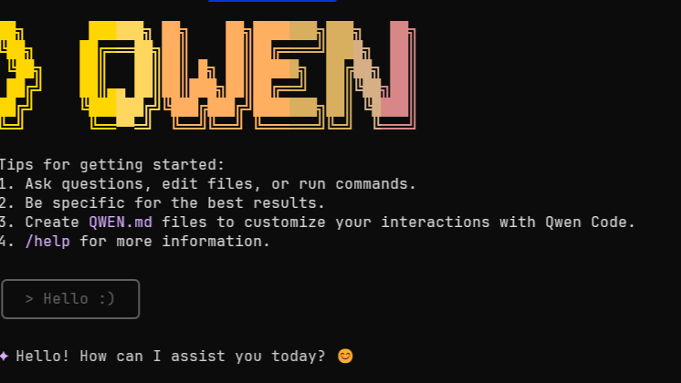
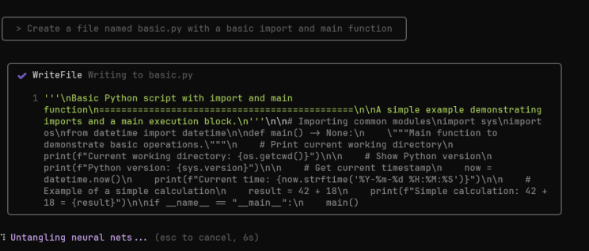

🤖⚡ Local agents, fast responses, no API bills. Qwen3-4B is your new best friend.
✍️ It’s been a while since I posted here, but I wanted to share something quick and practical.
🚀 Want to use the Qwen3-4B-Instruct-2507 model locally as if it were OpenAI? It’s easier than you’d think.
Thanks to tools like LM Studio and Qwen Code CLI, you can run the model on your machine and call it using an OpenAI-compatible API — no need to change your existing codebase.
🧩 What do you need?

-
Install LM Studio and load the model
Qwen/Qwen3-4B-Instruct-2507. -
Start the model server in LM Studio Make sure it’s served at:
http://127.0.0.1:1234/v1 -
Install Qwen Code CLI globally:
npm install -g @qwen-code/qwen-code@latest qwen --version # Verify installation -
Create a
.envfile in your working directory with:OPENAI_API_KEY=lm-studio OPENAI_BASE_URL=http://127.0.0.1:1234/v1 OPENAI_MODEL=qwen3-4b-instruct-2507
💡 Why is this useful?
- It allows you to interact with the model directly from your terminal
- Compatible with tools like
LangChain,LlamaIndex, orAutogen - No cloud required — you stay fully offline
🎮 And yes — it runs on modest GPUs (8–12 GB VRAM). Ideal for laptops and local dev setups.
✅ Great for:
- 🧪 Testing local agents
- 🔒 Private, offline workflows
- ⚙️ Rapid development without API costs

If you’re building agents, exploring LLMs, or just want to keep your workflows local, this setup is a great starting point.
🛠️ Want example code or more advanced setups (multi-agents, LangGraph, etc.)? Just let me know.
#Qwen #LLM #OpenSourceAI #LangChain #LMStudio #QwenCode #LocalLLM #SmallGPUs #DeveloperTools